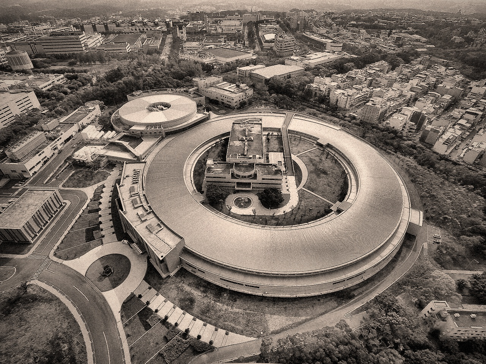
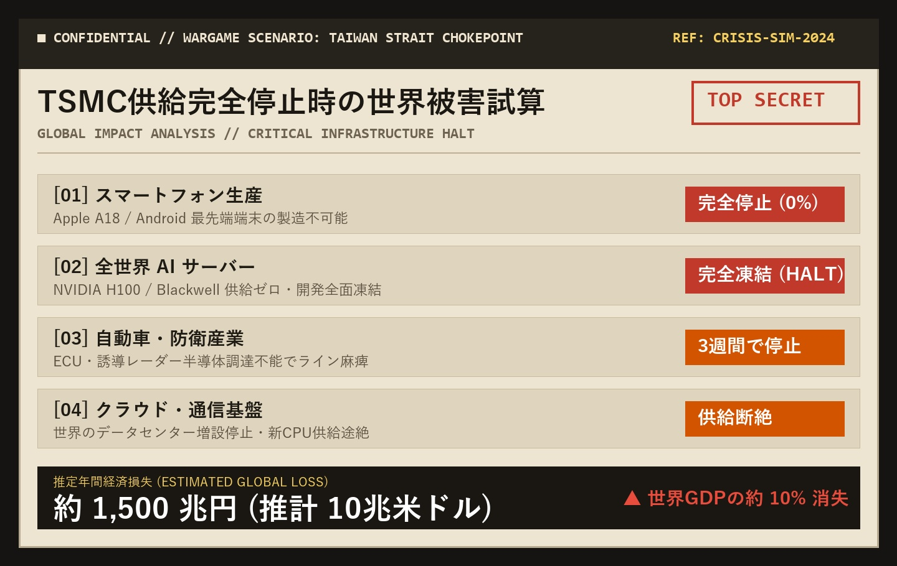
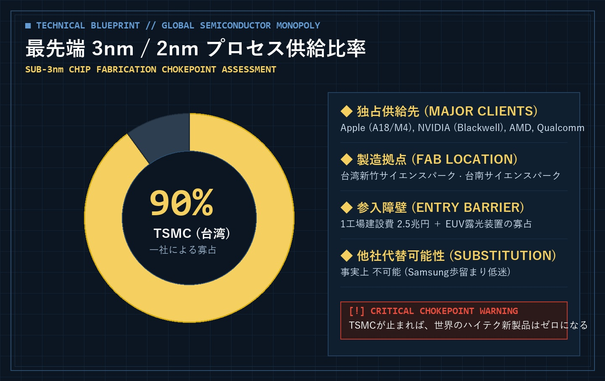
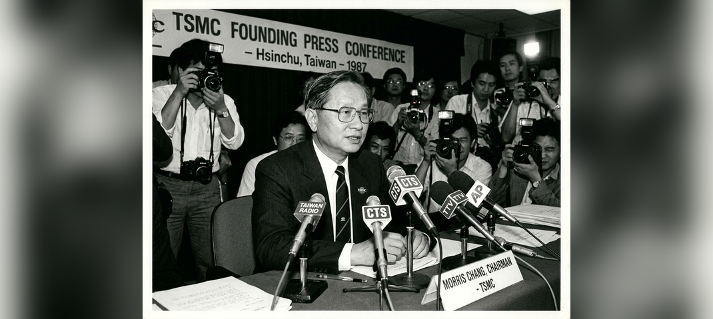

⚠ DEFCON 1 // TAIWAN STRAIT CRISIS
台湾海峡の危機
「もし明日、この海峡で戦争が始まったら──」
● REC 00:14:22:08
CAM-04 // HSINCHU FAB 12B
⊕ ASML TWINSCAN EUV
13.5nm LASER PRECISION
序章 // 台湾海峡有事
台湾海峡の危機「世界が止まる日」
新竹サイエンスパーク 24°48'N 120°59'E // 警戒レベル：DEFCON 1

TOP SECRET
◆ 台湾海峡有事 ── 最先端半導体の90%を生み出す新竹サイエンスパークの危機
もし明日、台湾海峡で戦争が勃発し、たったひとつの企業が操業を停止したらどうなるでしょうか？
第1章 // 被害試算
世界経済損失10兆ドルのシミュレーション
TSMC操業停止がもたらす世界同時麻痺 // 被害額：年間1500兆円の消失

SIMULATION
◆ 台湾海峡有事の試算 ── TSMC停止時の世界経済損失：推計年間10兆ドル（約1500兆円）／ 世界のAI・スマホが完全麻痺
あなたの手元のスマートフォンは製造不能になり、全世界のAI開発は完全凍結。データセンターは沈黙し、世界経済は数週間で数千兆円規模の壊滅的打撃を受けます。
第2章 // 急所の独占
最先端3nm/2nm世界シェア90%の独占
ASML極端紫外線(EUV)露光装置 · 1台350億円 // 人類史上最も危険なチョークポイント

90% 独占
◆ 究極の急所 ── 最先端3nm/2nmの90%以上をTSMCが独占・Apple A18 / NVIDIA Blackwellの全量を受託
その企業の名前は、TSMC（台湾積体電路製造）。世界の先端半導体の90％以上を独占する、人類史上最も危険で、最も不可欠な「チョークポイント（急所）」です。
第3章 // 国家の跪き
日本政府の巨額補助金：1.2兆円の決断
2024年2月 熊本・菊陽町 JASM第1工場開所 // 国家が93歳の老人に頭を下げた日
FILE REF: METI-SEMICONDUCTOR-STRATEGY-2024

創業者モリス・チャン（93歳）

熊本・阿蘇山麓 JASM第1工場
1.2 TRILLION ¥
【熊本 JASM第1工場】総投資額 1.2兆円 / 日本政府支援 4,760億円 ── 国家が93歳の老人に頭を下げた日
2024年2月、日本の熊本県菊陽町。のどかなキャベツ畑の真ん中に突如現れた巨大工場に、日本政府は異例の1兆2000億円を超える巨額補助金を投じ、政財界のトップたちが93歳の老人に深々と頭を下げました。
第4章 // 1987年の賭け
1987年 新竹の片隅「資本ゼロ・名声ゼロ」の町工場
設立時・55歳モリス・チャンの孤立無援の挑戦 // 世界初「純粋受託製造」の誕生
HISTORICAL ARCHIVE // 1987 FOUNDING REPORT

1987年設立時 · 55歳の挑戦
FOUNDING 1987
◆ 1987年 新竹 ── 資本ゼロ・名声ゼロから始まった世界初「純粋受託製造（ファウンドリ）」の挑戦
しかし、時計の針を37年前、1987年に戻してみてください。この会社は、技術なし、資金なし、名声なし。アメリカのシリコンバレーで出世街道から脱落し、55歳で台湾に渡った一人の男が立ち上げた「誰も見向きもしない下請け工場」でした。
第5章 // 巨人の衝突
IDM 対 ファウンドリ「持たざる者」への武器
インテルCEO アンディ・グローブ 対 TSMC モリス・チャン // 半導体民主化の夜明け
インテルCEO アンディ・グローブ
VS
IDM 対 ファウンドリ

受託製造の祖 モリス・チャン
PARADIGM SHIFT
◆ ファウンドリモデル誕生 ── 「工場を持たない天才たち」に武器を与えた半導体の民主化
なぜ、誰にも相手にされなかった町工場が、AppleやNVIDIA、そしてアメリカや日本すらひれ伏す怪物になれたのか？これは、常識を覆し続けた男の狂気の逆転劇です。